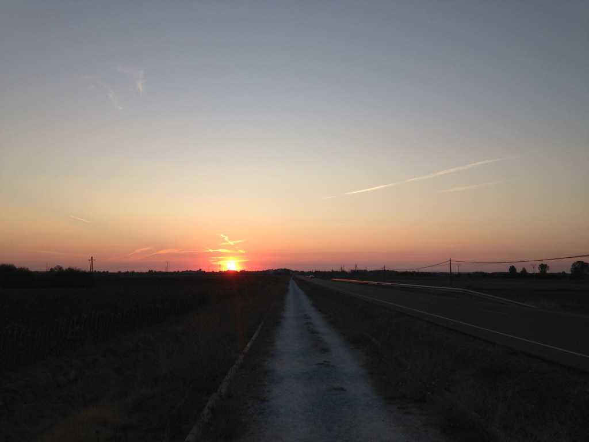

9: An Ode to the Road
- Each and every day I wake and walk with the sun.
- It starts low, climbing over hillsides, rising slowly.
- At last it finds its place in the sky
- and begins to color the Meseta.
- Front and center a shadow grows.
- It looks at me with indifference – a mirror of my darker side.
- Fear, insecurity, doubt,
- The manifestation of my inner demons.
- Each and every day, I wake and walk and confront them.
- If I fight and struggle, I hurt and suffer.
- If I push them away, I push myself away.
- I cannot hide, I cannot run,
- I can only bear witness.
- Salvation lies within absence.
- But do I do it? Do I dare eclipse the sun?
- To turn from the shadows is to turn from truth.
- I would be swallowed whole.
- My shadow is here,
- my shadow is me.
- So long as I walk the Way,
- it will keep me company.
- I can’t be scared
- I mustn’t be afraid.
- I must continue on and on and on,
- moving toward the falling sun.
- Each and every day, I wake and walk towards Santiago.
- The closer I get, the lighter I feel.
- The sun hangs low, peering over hillsides, descending slowly.
- Color fades from the Meseta, and my shadow is behind me.
- Westward lies Santiago, and I look.
- The sun has set, the dark has settled.
- A fire begins to grow deep inside.
- It lights the valley and shows me the Way.
- I wake and walk toward the Light,
- closer and closer to Santiago.
